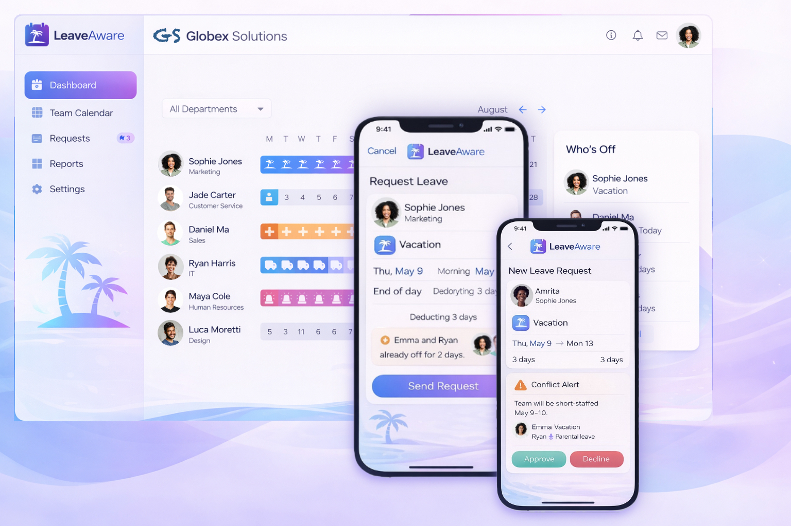

LeaveAware helps small teams track leave, approve requests instantly, and stay aware of team availability — so work never gets understaffed.
no credit card required
Built for small teams replacing spreadsheets, chat messages, and email approvals

Managing leave with spreadsheets, chat messages, and email threads creates confusion, missed approvals, poor visibility, and staffing conflicts.
Overlapping vacations
Short-staffed teams
Spreadsheet chaos
Chat approval confusion
Endless email chains
LeaveAware replaces the chaos with one clear, simple system.
Everything small teams need to manage leave clearly, quickly, and without surprises.
Request and approve leave from anywhere with a fast, simple experience on web, iPhone, and Android.
Get notified instantly when requests are submitted, approved, or declined, so nothing gets missed.
Managers can review and approve requests in just a tap, without delays or back-and-forth.
See who’s off, who’s available, and where conflicts may happen before they affect work.
Automatically include public holidays for your region, with no manual setup or tracking.
Employees always know what’s left, and managers can monitor balances across the team in real time.
Set up your team, manage requests, and prevent staffing conflicts in just a few steps.
Add team members in minutes and get started without complex setup.
Employees submit requests, and managers review and approve in just a click.
Smart alerts help prevent overlapping leave and short-staffed teams before problems happen.
Designed for small teams with 5–50 employees.
Focus on growth while LeaveAware handles team availability and time-off planning.
Coordinate client work and team availability without scheduling surprises.
See availability across time zones and keep distributed teams aligned.
Simple leave management without the complexity of traditional HR software.
No. LeaveAware is mobile-first, but it also includes a full web app, so teams can request leave, approve requests, and check availability from phone or browser.
Managers can be notified when new leave requests are submitted, and employees can be notified when requests are approved or declined, so nothing gets missed.
Yes. Managers can review pending requests and approve or decline them from their phone using LeaveAware's mobile-friendly experience.
Yes. Employees can be notified when a request is approved or declined, and they can also check the latest status in LeaveAware.
Yes. LeaveAware supports public holidays for your region, so teams can see holidays alongside leave and plan availability more clearly.